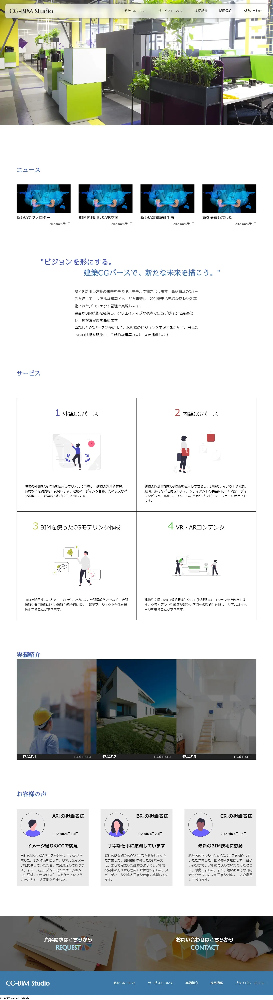

クライアントの要望
最先端の建築技術を取り扱っている旨を分かりやすく伝えたい
システム要件
- WordPress
- PHP
- drop-inner
デザインコンセプト
架空の建築会社のサイトを作成しました。
PHP,WordPress等を使用して最新ニュースの更新や資料請求等ができるように動的なサイトになっています。
wordpressのプラグインを使用してログイン画面のセキュリティ対策もしています。
実績紹介の部分等は、hoverをした際に明暗差をつけることによって感覚的にボタンを押しやすいようになっています。